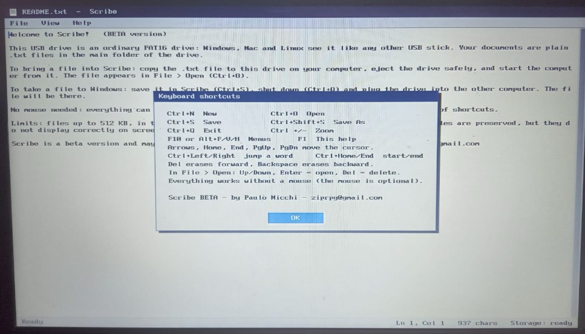

No Notifications
No email alerts, social media notifications, or messaging applications. Just writing.
Turn any compatible computer into a distraction-free digital typewriter.

Modern computers constantly compete for your attention. Scribe removes the noise and lets you focus on your words.
No email alerts, social media notifications, or messaging applications. Just writing.
No endless browsing, videos, news feeds, games, or online rabbit holes.
Turn a compatible computer into a dedicated writing machine in seconds.
Scribe runs directly from a USB flash drive. You can use it on your everyday computer without replacing Windows, macOS, or Linux.
Your writing remains accessible from your regular operating system without requiring special software.
Scribe has very low processor and memory requirements, making it suitable for many older computers.
Designed to operate with minimal processor power and memory.
Scribe operates from its USB drive, so the computer does not need an installed hard drive.
An older computer can become a simple and useful dedicated writing device.
Scribe saves documents as standard TXT files. Plain-text documents are small, simple, reliable, and easy to move between operating systems.
The system is available for writing and testing, but it may still contain bugs. Features and behavior may change as development continues.
Download Scribe and create your portable, distraction-free writing environment.
Scribe is distributed as a compressed ZIP package containing the bootable system image.
After downloading the ZIP file:
If you are unfamiliar with creating bootable USB drives, search online for:
These tools are widely used, and many step-by-step tutorials and videos are available online.
Important: Writing a bootable image to a USB drive will usually erase all existing data on that drive. Back up any important files before proceeding.
Storage requirement: Scribe requires only 32 MB of storage space. Any modern USB flash drive will have more than enough capacity.
Download the Scribe ZIP package, extract the bootable image, and use Rufus or Balena Etcher to write it to a USB flash drive.
Scribe is beta software provided for testing. Back up important writing regularly.
Scribe is offered free of charge.
If Scribe helps you focus, write more effectively, or give new life to old hardware, please consider supporting the project. Donations can help with development, testing, bug fixes, and future improvements.
Donate with PayPal